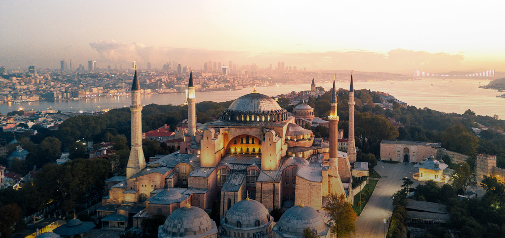

TRAVEL DESTINATIONS
Ever wondered where you should go for a vacation? Well you shouldn't because you're not supposed to leave the house right now. Eventually, if the world doesn't end,
ROME

As you can see on this image right here, Rome seems like a wonderful place full of history and character. Speaking of history and character, Rome is where Assassins Creed II: Brotherhood takes place. You play as Ezio Auditore, by then a somewhat seasoned assassin who fights the templars for the apple of Eden. A mind control weapon made by a race of precursors to us humans. You fight the pope's son, who is after the apple, as well as absolute power. Great game honestly. Oh, Rome is a great city to visit as well.
MOSCOW

Moscow. The capital city of of the largest country in the world, Russia. A beautiful town full of wonderul places and secret passageways. Ofcourse, the secret passageways part is just a speculation, since I can't quite be sure that the KGB actually built and used them. But I'm pretty sure. If you're reading this and at the time you are I happen to have "mysteriously dissapeared" know that the KGB came to make sure I don't speculate about anything. Ever.
MOSCOW
A city previously known as Constantinopole, a capitol to what was one of the worlds largest empires. Also a place where an Assassins Creed game takes place. You are still Ezio, but older, in search of answers. You also get to see the story of another assassin, Altair. He was also in search of the apple of Eden. after he found it and learned it's secrets, he went to a library, where he sealed himself, and passed away. You are in Istanbul in search of the keys for this library, so that Ezio could carry on the legacy and knowledge of Altair.